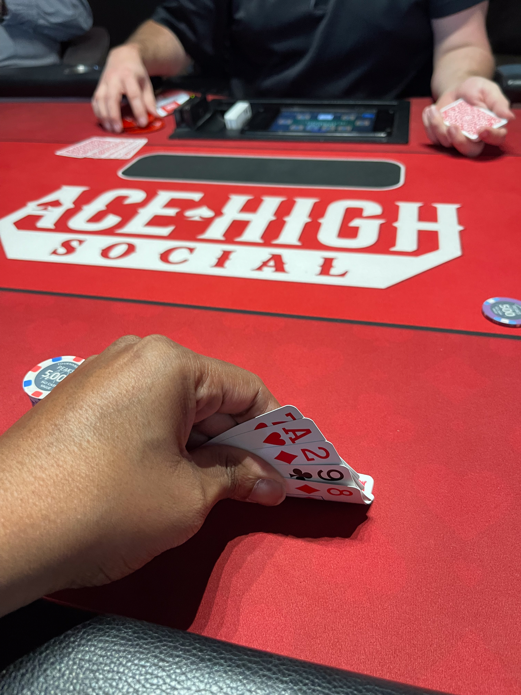
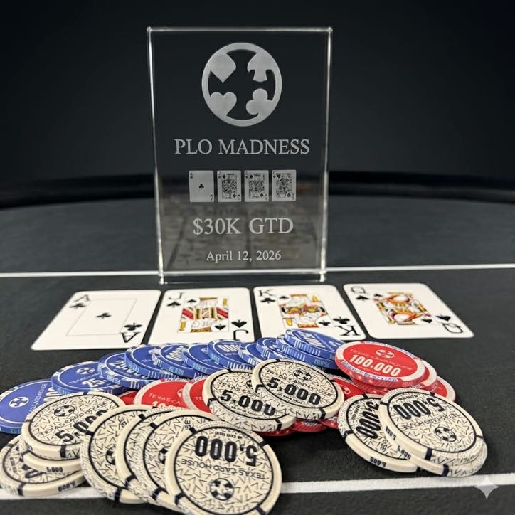

TSR Score
Know what
you’re buying into.
A structure grade, not a prediction of profit.
How scoring works →Evaluate a tournament
Required fields must be complete for a definitive score. Calculations run in your browser.
Your TSR Score
Enter a structure or load the sample to begin.
Score breakdown
- Playable depth
- Awaiting calculation
- Blind jumps
- Awaiting calculation
- Level pace
- Awaiting calculation
- Fee share
- Awaiting calculation
Strengths
Calculate a complete structure to see its strengths.
Tradeoffs
Blind jumps and fee context will appear here.
Data-Based Structure Analysis Automated from structure inputs — not personal experience
No assessment yet. Editor commentary has not been supplied.
Understand the grade
Three factors help explain a tournament structure.
Depth
How long your stack covers orbit costs. Deeper structures leave more room for decisions.

Pace
Blind growth and level length shape the speed of play. Material jumps can reduce the score.

Fees
The portion of spend going to fees. Shown for context; fees do not change the numeric score.
Two formats. Different objectives.
Weekly
Designed for a practical evening finish, balancing depth and pace in a single session.

Series
Longer play and larger fields place different demands on progression and depth.
Methodology: v1.1 (3-Curve A–D Scale). Weekly Recurring uses Curve 1. Single-day Series strictly below $400 uses Curve 2. Series at $400 or above, multi-day Series and Major events use Curve 3. Unknown / Ambiguous withholds the letter grade. All curves have a D− floor.
Read the methodology →